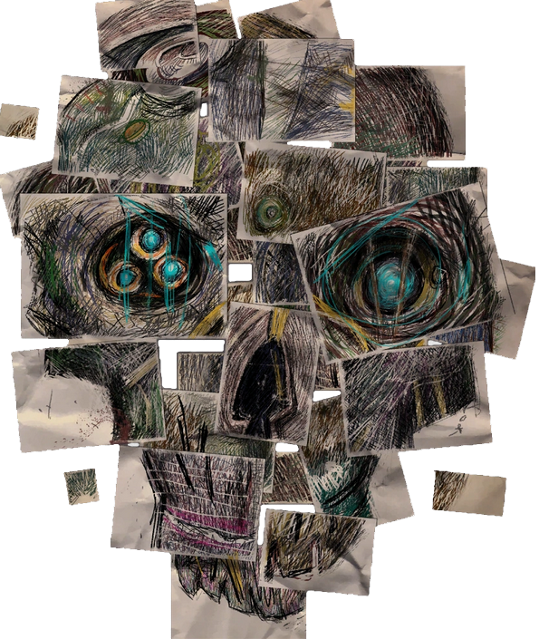
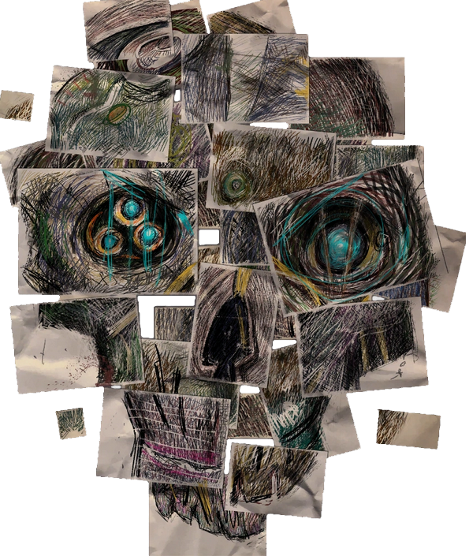

Sobre
Origem
Corvo nasceu em Sarkonos e quando adolescente viajou para Dunwall, a capital do Império das Ilhas. Aí tornou-se o Royal Protector da Emperatriz Jessamine.
Dishonored
Corvo Attano é o protagonista do primeiro jogo. O Royal Protector volta a Dunwall após procurar por uma cura para a praga de ratos que assombra a capital, sem sucesso. Aí vê Jessamine a ser assassinada e Emily raptada. Culpado por esses crimes, Corvo tem de fugir da prisão, encontrar Emily, colocá-la no trono e restaurar a sua honra.
Dishonored 2
No segundo jogo da série é possível jogar com o Corvo ou com Emily. Se escolhermos jogar com o Corvo o nosso objetivo é quebrar a maldição sobre Emily e retirar a usurpadora Delilah do trono.
Personalidade
Corvo tem alguns traços de personalidade constantes, mas outros serão entendidos pelo jogador dependendo das suas ações. A sua personalidade constante pode ser retratada por estas características:
- Destemido
- Focado
- Imbalável
- Reservado
Os traços mutáveis, bem como o destino de Dunwall, são decididos através da classificação atribuída à
forma de jogar, que pode ser "Pouco Caos" ou "Muito Caos". Há um caso raro de "Caos Médio", que pertence à
categoria de "Muito Caos" mas não conclui a história da forma mais catastrófica.
Há muitas formas de
obter essas categorias, mas os métodos mais comuns dão-nos uma personagem que é:
- Pouco Caos
- Muito Caos
| Cauteloso | Brusco |
| Engenhoso | Explosivo |
| Misericordioso | Vingativo |
 
